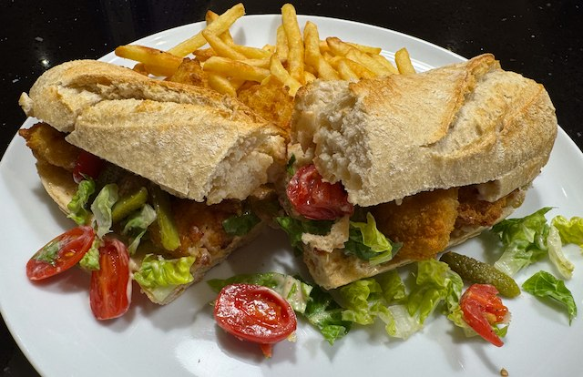

Serves: 2
Cook Time: 30 min
Scampi Po Boys

From bbc good food. Serve with chips and salad from the spare lettuce.
Ingredients
- 2 part baked baguettes
- 200g frozen scampi
- ½ iceberg lettuce, torn into pieces
- 6 cherry tomatoes, sliced and salted
- 8 cocktail gherkins, sliced in half
- 1 garlic clove, minced
- 4 tbsp mayonnaise
- 1 tbsp hot sauce
- 1 tsp pickle juice
Method
Bake the scampi in the oven, following packet directions.
Bake the bread in the oven, following packet instructions.
Make the dressing, by whisking together the garlic, mayonnaise, hot sauce and pickle juice.
Assemble. Cut the bread in half and spread over the dressing. Slap on the scampi, gherkins, lettuce and tomatoes.